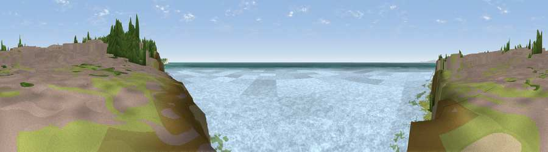

Viewpoint near Peacehaven
#16654 in England · top 49% of its area beats it · near PeacehavenWhere it is
The exact computed spot (TQ 42125 00425). Click the marker for map links.
The view, rendered

A 360° render of this exact spot computed from the terrain model, tree cover and land cover — summer colours, afternoon light, calibrated against photographs of famous viewpoints. Real trees, hedges and buildings will differ in detail.
The panorama
Grey silhouette: terrain skyline in each direction (720 bearings, Earth curvature and refraction included). Dashed green: skyline with trees (+15 m) and buildings (+8 m) as obstacles. Blue strip: how far the ground is visible on each bearing.
Where the view opens
Wedge length = distance to the farthest visible ground on that bearing (vegetation-aware). Rings at 10, 25 and 50 km.
What fills the view
78% water · 11% grassland · 4% wetland · 4% built-up · 2% woodland ·
Angular shares of the visible panorama (visual magnitude), not map area. Landscape diversity 0.35 (0–1 Shannon).
Key numbers
More beautiful places nearby
The staircase of upgrades: each row has a higher view potential than everything closer. Driving times are estimates from straight-line distance, calibrated against real road routing — check an actual route before setting out.
| Place | Direction | Drive | Score |
|---|---|---|---|
| Viewpoint near Newhaven | ESE · 1 km | ~3 min | 61.8 |
| Viewpoint near Newhaven | E · 3 km | ~6 min | 65.3 |
| Viewpoint near Telscombe | NW · 4 km | ~8 min | 71.6 |
| Viewpoint near Telscombe | NW · 4 km | ~9 min | 73.6 |
| Itford Hill | NNE · 5 km | ~12 min | 76.9 |
| Viewpoint near Southease | NNE · 6 km | ~12 min | 80.8 |
| Viewpoint near Firle | NNE · 6 km | ~13 min | 81.4 |
| Viewpoint near Firle | NE · 7 km | ~14 min | 83.8 |
50.78598, 0.01485 · source: screening · position refined by local search. Computed location — check access rights before visiting.